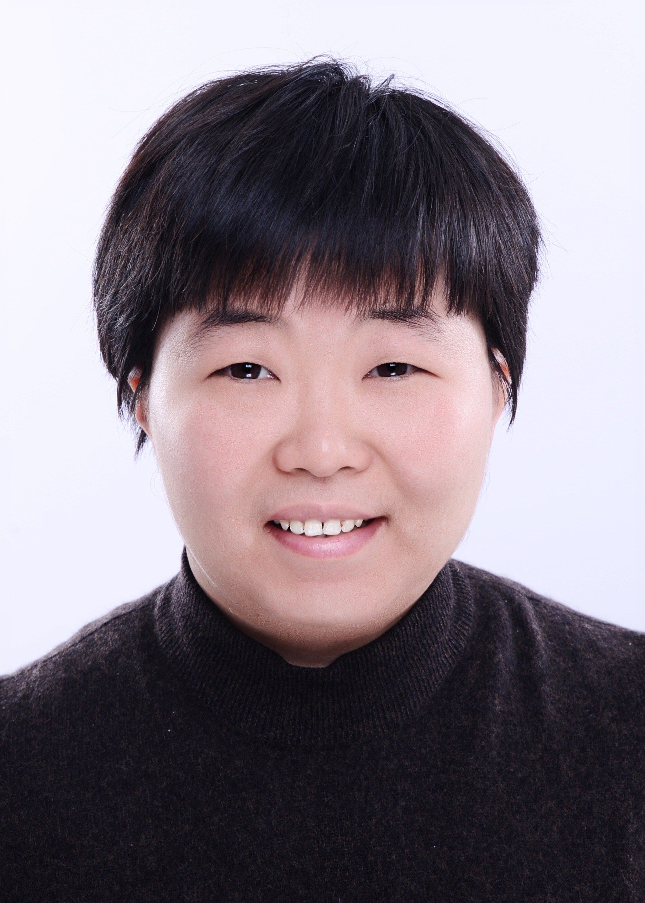
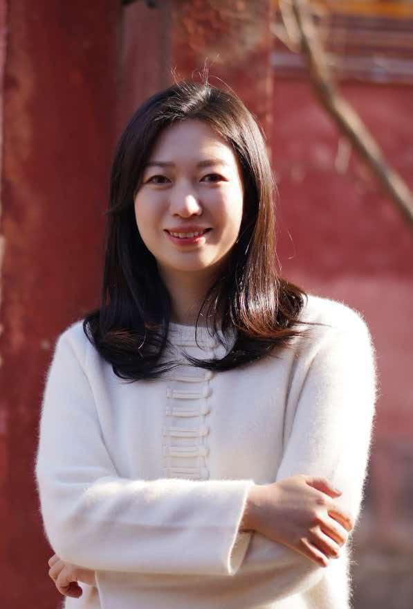

智缮团队
研究团队
连接人工智能方法与文化遗产的理解、修复及人文研究。

聂娜
Na Nie
南京大学博物馆研究馆员，中国语言战略研究中心研究员。主要研究方向包括汉语史音韵学、碑拓文献整理与研究，以及融合数学、人工智能与语言学、文化遗产等领域的数字人文交叉研究。
葛燕红
Yanhong Ge
南京大学文学院院长助理，中国语言战略研究中心研究员、副主任。主要研究方向包括语言政策与规划、高等教育管理，以及语言学与人工智能技术的交叉融合。

王陆伊
Luyi Wang
故宫博物院文保修复部副研究馆员。主要研究方向包括漆器文物的保护修复、工艺研究，以及人工智能在文物修复中的应用。


成员简介与研究方向由团队提供，照片来自公开学术主页或团队提供的资料。